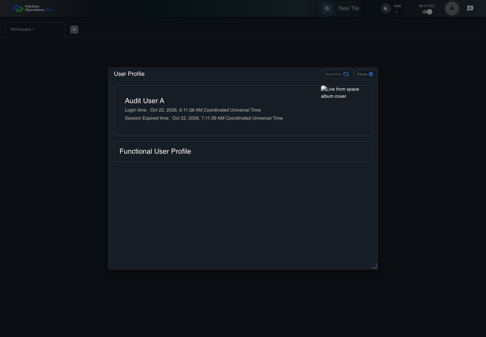

UX-013 keyboard and accessibility probe
FAIL · application/run-050/ux-013-keyboard-and-accessibility-probe-6242970ecd1e-attempt-1 · ACTUAL_APPLICATION_LOCAL_SERVICES
Actual React shell. Controlled catalog, user identity, photo failures, and SystemJS tenant. Chromium only. Accessibility and layout outcomes are proposed probes; no approved conformance standard is inferred.
2026-10-22T06:11:38.169Z to 2026-10-22T06:11:45.642Z
Assertions and result · Artifact manifest · Exact run inputs and source hashes
Result SHA-256:1c731ef5b66a4a7c19f867ef2b046037b84e1a8a4b3f345ddfcc1fae746aee85Retained failure details
[
{
"message": "Error: \u001b[2mexpect(\u001b[22m\u001b[31mlocator\u001b[39m\u001b[2m).\u001b[22mtoBeVisible\u001b[2m(\u001b[22m\u001b[2m)\u001b[22m failed\n\nLocator: getByRole('dialog', { name: 'User Profile', exact: true })\nExpected: visible\nTimeout: 5000ms\nError: element(s) not found\n\nCall log:\n\u001b[2m - Expect \"toBeVisible\" getByRole('dialog', { name: 'User Profile', exact: true }) with timeout 5000ms\u001b[22m\n\u001b[2m - waiting for getByRole('dialog', { name: 'User Profile', exact: true })\u001b[22m\n",
"stack": "Error: \u001b[2mexpect(\u001b[22m\u001b[31mlocator\u001b[39m\u001b[2m).\u001b[22mtoBeVisible\u001b[2m(\u001b[22m\u001b[2m)\u001b[22m failed\n\nLocator: getByRole('dialog', { name: 'User Profile', exact: true })\nExpected: visible\nTimeout: 5000ms\nError: element(s) not found\n\nCall log:\n\u001b[2m - Expect \"toBeVisible\" getByRole('dialog', { name: 'User Profile', exact: true }) with timeout 5000ms\u001b[22m\n\u001b[2m - waiting for getByRole('dialog', { name: 'User Profile', exact: true })\u001b[22m\n\n at /Users/lushevol/code/github/ratan-release-impact/workbench/e2e/audit-specs/ux-shell.spec.ts:106:147\n at AuditCapture.step (/Users/lushevol/code/github/ratan-release-impact/workbench/e2e/support/audit-fixture.ts:94:21)\n at /Users/lushevol/code/github/ratan-release-impact/workbench/e2e/audit-specs/ux-shell.spec.ts:44:31",
"location": {
"file": "/Users/lushevol/code/github/ratan-release-impact/workbench/e2e/audit-specs/ux-shell.spec.ts",
"column": 147,
"line": 106
},
"snippet": " 104 | if (text.includes('dialog labelled \"User Profile\"') && text.endsWith('is hidden')) { await expect(profileRoot(page)).toBeHidden(); return; }\n 105 | if (text.includes('active element is inside the User Profile')) { expect(await focusWithin(profileRoot(page))).toBe(true); return; }\n> 106 | if (text.includes('accessible name equal to \"User Profile\"')) { await expect(page.getByRole('dialog', { name:'User Profile', exact:true })).toBeVisible(); return; }\n | ^\n 107 | throw new Error(`Unbound keyboard step ${id}: ${text}`);\n 108 | });\n 109 | });"
}
]Machine observations
- accessibility-snapshot.json
0a2cf5236daa9128fbc06b7a133a0b821c40aaa162024e862ca10018180bdbde
Screenshot capture: CAPTURED. Named frames: 4.
Step screenshot bindings: COMPLETE. 3/3 canonical steps have execution screenshots.
Bindings measure structural coverage only. They do not establish screenshot content quality or relevance.
Screenshot content review: NOT_REVIEWED. Recorded context: 0/4 frames. Identical image bytes: 2 repeated frames. Recorded context does not establish human visual review.
Canonical step timeline
Given USER-A has the dialog labelled "User Profile" on the Home page visible
Execution: PASSED.
1. step-01 Visible state after step 1: Given USER-A has the dialog labelled "User Profile" on the Home page visible
2026-10-22T06:11:39.787Z · 1440×1000
Step: /Users/lushevol/code/github/ratan-release-impact/workbench/tasks/ui-test-coverage-20261022/test-cases.md:12688
SHA-256:91256ef217230e17cc33413e3bf7d482a39e04a96e65a1c419b913c0ed29af30When The accessibility probe captures the profile dialog
Execution: PASSED.
2. step-02 Visible state after step 2: When The accessibility probe captures the profile dialog
2026-10-22T06:11:39.952Z · 1440×1000
Step: /Users/lushevol/code/github/ratan-release-impact/workbench/tasks/ui-test-coverage-20261022/test-cases.md:12689
SHA-256:91256ef217230e17cc33413e3bf7d482a39e04a96e65a1c419b913c0ed29af30Image bytes match frame 1. An unchanged image can be valid for consecutive assertions. This match does not establish correct step content.
Then The dialog labelled "User Profile" on the Home page has accessible name equal to "User Profile"
Execution: FAILED.3. step-03-failure Visible state when step 3 failed. Later steps did not execute.
2026-10-22T06:11:45.035Z · 1440×1000
Step: /Users/lushevol/code/github/ratan-release-impact/workbench/tasks/ui-test-coverage-20261022/test-cases.md:12690
SHA-256:62cfc1508388e7cfa6bdeecd7038572ca89f45e1d4caf421a0b8bab98a524488
Additional named frames

The visible state when the test failed.
2026-10-22T06:11:45.150Z · 1440×1000Step: Test source: /Users/lushevol/code/github/ratan-release-impact/workbench/e2e/audit-specs/ux-shell.spec.ts:39
SHA-256:
62cfc1508388e7cfa6bdeecd7038572ca89f45e1d4caf421a0b8bab98a524488Image bytes match frame 3. An unchanged image can be valid for consecutive assertions. This match does not establish correct step content.
Screenshots establish visible state only. Assertions and traces support functional claims.